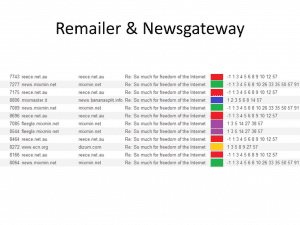

August Moliere is an IT guy using his skills to help fellow masculine men. In his free time he enjoys european culture and decries rootless cosmopolitanism.


In a previous article I discussed the possibilities of increasing your safety online by using measures such as encryption, VPN and Tor. Nonetheless I did not cover all possibilities and most importantly it was a practical discussion rather than a theoretical one. This article will be a theoretical dissection of online anonymity tools and their weaknesses.
Why do people get caught despite using Tor? Can anyone be truly anonymous online ?
This article will be a summary of the work of Tom Ritter, presented at DEFCON 21, the annual hacker conference. His video presentation can be viewed here and the printed version of his article here.
While doing a great Job, Tom’s work is heavy on tech jargon and might confuse laymen. So I will summarize his work and explain the strengths and weaknesses of modern anonymity tools. His work was published in 2013, but remains relevant today as well.
In his work Tom talks about 4 anonymity technologies : SSL, Tor, Remailers and Shared Mailboxes. Let’s discuss them one by one.
SSL stands for Secure Socket Layer and is a common online security standard used by the likes of Facebook and other major websites. The way SSL works is that it creates an encrypted tunnel of communication between 2 parties so that third parties cannot read the messages they are sending to each other. Despite being secure on paper, it can be circumvented rather easily. To understand how, first we must talk about metadata.
Metadata is data that describes other data. For example, library cards which hold the name of the book, its publishing date and its location in the library is a form of metadata. Metadata is also used in IT.
An example of metadata is the EXIF file in photos. When you take a photo with a camera you not only register the photo, but usually your device also adds extra info such as the date the photo was taken, the GPS location, phone brand, etc. and stores it in the photo file.

Other form of metadata is not registered but can be inferred. For example, someone created a program that can discover which parts of Google maps you are looking at based on the size of map tiles you are downloading.
When you are using SSL you are unwillingly lending third parties metadata which can lead to your discovery, particularly the time the message was sent and the size of your messages.
This allows for attackers to do something called a correlation attack.
Correlation attacks are primarily of 2 types : Time-based attacks and Size-based attacks
In order to perform a time-based attack a party sends a message in an encrypted stream, then it looks at who receives the message. Since SSL communication is instantaneous, you can easily infer who is behind the SSL stream. The third party sends a message at 15:59 and whoever happens to get the message right afterwards must be the person they are looking for.
This type of attack was used against the person who dumped Stratfor mailpools. The way it worked is that government analyzed the time he was logging in on the internet and noticed it coincided with the time the person they suspected logged on to a secret chat through Tor. Not only that, rumor has it the government cut electricity to his house at a certain hour and noticed that the user of the secret chat logged out at the same time. The coincidences were too much, so he got caught.
In order to perform a size-based attack, the third party sends a file of an unusual size, and then whoever receives the file must be the person they are looking for. Since most people on Facebook send small messages to each other, one only needs to send a very large message and see who happens to receive a message of that size afterwards.
As you can see correlation attacks render you vulnerable if you use SSL as your only line of defense. The reason is because the Third Party can not see WHAT you are sending, but they know that you ARE sending something, WHEN you do it and HOW BIG is the file.

Ideally they should not even know you are communicating with anything at all. So, let’s see what other technologies have to offer.
Tor is a custom browser based on Firefox with extensions that works on the principle of connecting to a few nodes so that when you look at a website the only thing the website can see is the last node you traveled through and on the opposite side your ISP (Internet Service Provider ) can only see your first node, not the whole route.
This is already getting better. However it does not add that much anonymity since now third parties do not know WHO is communicating, but they can still see that it DOES happen, WHEN it happens and HOW BIG the size of messages are.
Not only that, but there are known vulnerabilities, particularly of 3 types.
You are viewing a website in the country you are in.
This allows advanced opponents calculate that it was YOU who was using Tor. It is difficult, but not impossible. This is bad news since a lot of people from US view websites stored in US. And so do dissidents from China or Iran.
Every single node you pass through is compromised
In my previous article I mentioned that the government can set up Tor nodes that they monitor. But to successfully pull an attack they would have to monitor EVERY node you go through.
This requires NWO level trickery, but again, we already have examples of this happening already with VPN agreements. Countries in the Anglosphere have an agreement to give away information regarding VPN usage by suspects from respective countries. This agreements is called Five Eyes. I wouldn’t be surprised if a similar thing is organized regarding Tor nodes.
Passive traffic analysis
Although not mentioned by Ritter in his presentation, it is common knowledge that an opponent with a lot of resources, mostly governments, could analyze the whole network and correlate patterns to discover who is viewing a certain website or communicating with someone.
To give an analogy, it would be like the police heavily patrolling every single street in a city and every single car , so that even if your car had fake plates they could notice patterns and discover its owner.
The problem is, this approach can create false positives, with a 10% chance of error, which is why these analyses are not accepted in court as proof. But you can rest sure if such an analysis points to you, you will be put under further investigation and it only gets worse from there.
So what can be used to further aid us ?
Remailers are an interesting concept. The way they work is that people pool their mail messages on a server, after which some time passes and all mails are sent simultaneously at the same time.
This is supposed to protect from Time and Size based correlation attacks.
The problem here is that it still allows third parties to see that you ARE sending a message, WHEN you sent it and HOW BIG it was. But they can’t see the other end. For the receiver, he has the same problem. Third parties can’t know WHO he got the message from, but they can still see WHEN he receives it from the remailer and HOW BIG it is.
On top of that, for Remailers to work lots of people have to use them at the same time. Otherwise if there are few users, an enemy can still use size-based correlation attacks.
It’s hard to use size-based attacks when thousands of people are sending messages of various sizes, but if only three people at one time are using a Remailer, then it is very easy to do a size-based attack.
Shared mailboxes are the most out-of-the-box anonymous solution.
The way a shared mailbox works is that users share a mailbox. They cannot delete messages from it, but can only add encrypted messages to it. And when they want to check if they received a message they download all messages and use their key and try to decrypt the header of all of them and see if any of the messages belong to him.
It is a resource-tedious process, but it offers a great payoff. For the receiver this is great because when he downloads the whole mailbox third parties can’t know if he received a message, maybe he did, or maybe he didn’t. For the sender however, the equation stays the same as before.

This is for the moment the most powerful anonymity solution out there. However it has a few issues. In order to use alt.anonymous.message (the shared inbox) you need to have some degree of technical skill, and user inexperience leads to issues.
In order to be easier to use alt.anonymous.message allows the use of nymservers. Nymservers act as regular mail addresses, which when sent to, automatically post them to alt.anonymous.message .
There are however issues with AAM and Nymservers.
The number one issue is there are currently two main node operators: Zax and Dizzum, which are responsible for the trafficking of messages to alt.anonymous.message. If both were to retire or be arrested it would the death of alt.anonymous.message. As you can see, network diversity is horrible.
Another issue is the type of encryption used. Some messages used the outdated MD5 encryption standard which is easy to crack.
Also, the title of messages are encrypted less strongly in order to be able to determine quickly which belong to you and which don’t. Subjects can be encrypted using either hsubs or esubs. Esubs is an older and stronger standard, but hsubs have grown in popularity in recent years.


A lot of messages use the same subject over and over, people tend to reply to a particular subject. On top of that most people also usually use the same remailer over and over, you can start noticing communication patterns :

There are different type of remailers. The old school one was called Type 1 and lives on in the protocol of Mixmaster. It allows a lot of customizing options for the header. The users often screwed up the name of the command, which ended in the title of a message.
For example if you write “X-No-Archive Hello Friend” it would turn into “Hello Friend” and the X-No-archive would be interpreted as a command to not archive. But if you wrote “no-archive-x Hello Friend” you messed up so the title would become “no-archive-x Hello Friend”. If you do this multiple times, you would be identified as a unique user since your titles would all contain “no-archive-x” or uncapitalized “x-no-archive” or whatever other combination of mispelled commands you use.
Since most people used the same commands over and over and did the same mistakes they became quickly identifiable as unique users.
There are different types of remailers. Currently there are two types of remailers in use, MixMaster and MixMinion. MixMinion has certain advantages over MixMaster. But both suffer from certain problems.
Nymservers themselves have problems. Zax’s Nymserver is instantaneous which allows for size-based correlation attacks. However even Type 1 Nymservers (older ones) which are not always instantaneous still allow for size-based correlation attacks given a bit of perspicacity.
Therefore we identified main issues with AAM (alt.anonymous.message):
1) Giving users options allows for segregation and profiling
2) Some encryption is weak
3) It can be complicated to use and allows for beginner mistakes
4) Weak network diversity
Nonetheless, Ritter identified the most secure way of using AAM :
1) Use a strong passphrase and hsub
2) Use Type 3 PGP packet (Key Stretching)
3) Use Remailers
4) Do not use extra headers or options
The issue here is that if you do it properly you will still be part of a small community of people doing so (around 500 – 1500 people), which will make you looks suspicious and will cause the government to look closer into you and maybe add you to a database.
Pynchon Gate is a project meant to replace shared mailboxes. It uses Private Information Retrieval. It exposes less meta-data, scales better and resists flooding and size-based attacks. However it is currently work in progress
MixMinion is currently the best remailer protocol and as such should be used as a basis for future improvement. Planned improvements include things such as improving TLS settings and moving to a new packet format.

As of right now, what is lacking is some tech that could be used to anonymously share large files. AAM and such are low bandwidth, which means it can only be used to share small files like text messages.
A new service needs to be created to cover this niche. In the words of Tom Ritter :
But what I keep coming back to is the fact that we have no anonymity network that is high bandwidth, high latency. We have no anonymity network that would have let someone securely share the Collateral Murder video, without Wikileaks being their proxy. You can’t take a video of corruption or police brutality, and post it anonymously.
Now I hear you arguing with me in your heads: Use Tor and upload it to Youtube. No, youtube will take it down. Use Tor and upload it to MEGA, or some site that will fight fradulent takedown notices. Okay, but now you’re relying on the good graces of some third party. A third party that is known to host the video, and can be sued. Wikileaks was the last organization that was willing to take on that legal fight, and now they are no longer in the business of hosting content for normal people.
And you can say Hidden Service and I’ll point to size-based traffic analysis and confirmation attacks that come with a low-latency network, never mind Ralf-Phillip Weinmen’s amazing work the other month that really killed Hidden Services. We can go on and on like this, but I hope you’ll at least concede the point that what you are coming up with are work-arounds for a problem that we lack a good solution to.
As we can see true anonymity online is non-existent. At the very least, third parties can collect meta-data on you and use correlation attacks, when ideally they shouldn’t even know you are communicating at all. Moreover, even strong anonymity tools like Tor have shown to have known vulnerabilities.
However, what matters is not whether something is vulnerable in theory, but rather does it keep you safe in practice? And so far, the tools we have at our disposal are pretty powerful.
As I have mentioned in my previous article, using TailsOS off a flash stick in a public wi-fi area with no cameras + VPN/Tor seems to be the best solution for now.
The testament to the power of anonymity tools is that pedophile rings and drug dealers have managed to escape persecution by multiple world governments to this day using them.
And that’s what I will talk about in my next article. We will analyze the electronic operational security of pedophile rings and how one infamous one managed to escape unscathed after years of being searched. Stay tuned.
Read More: 12 Ways To Increase Your Anonymity And Security Online